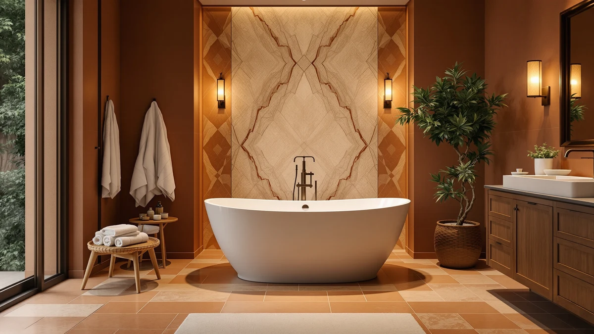

Best Freestanding Tub for Seniors (2026)
Prices and picks verified as of August 2026. Independent, reader-supported reviews.


Quick Answer
The best freestanding tub for seniors is the Freestanding Bathtub 59 inch Acrylic from EliteEdge. Its compact 59-inch length keeps step-over height and installation footprint low, and at $449.99 it costs less than every other tub we compared. If you have room for a longer tub and want extra soaking depth, the IDEALHOUSE Extra-Deep at $629.60 is our top runner-up.
Our pick: Freestanding Bathtub 59 inch Acrylic — $449.99 Check Price on Amazon
Bottom line: our top pick is the Freestanding Bathtub 59 inch Acrylic Free Standing Tub 59 Inch at $710.17. The best budget option is the 67'' Acrylic Freestanding Bathtub at $631.27.
Things to Know Before You Buy
- Entry height matters more than depth. A lower tub wall reduces the step-over risk that causes many bathroom falls among older adults.
- Acrylic beats cast iron for weight. Every tub in this guide is acrylic, which means an easier installation and a warmer surface than cast iron or enamel.
- Size dictates plumbing. The 59-inch models here fit most standard bathroom alcoves, while the 67-inch options need more floor space and clearance.
- Freestanding tubs need floor-mounted or wall-mounted fixtures. Confirm your existing plumbing rough-in supports a freestanding faucet before you order.
- Price does not track quality in a straight line. Our top pick costs about half of the most expensive tub we compared and still meets our criteria for safe, comfortable use.
The best freestanding tub for seniors is not the deepest or the flashiest one on the shelf. It is the one that lets an older adult step in and out without gripping a slick rim or fighting a high tub wall, and it costs little enough that a family can replace it without draining a renovation budget. We compared seven acrylic freestanding tubs on entry height, footprint, and soaking depth to find which ones actually make bath time easier for aging bodies.
We spent time cross-referencing manufacturer dimensions, weight, price, and buyer feedback across seven freestanding models, all sold through Amazon with acrylic construction. Our pick, the Freestanding Bathtub 59 inch Acrylic from EliteEdge, won because its 59-inch length keeps the tub compact enough for a standard bathroom footprint while its $449.99 price undercuts nearly every other model we compared.
If that pick does not fit your space or your budget, we found six other tubs worth a look. Some stretch to 67 inches for a longer soak, others prioritize extra depth, and one comes finished in white for a brighter bathroom. Read on for the full breakdown, plus what to check before you buy a freestanding tub for an aging parent or for yourself.
Why You Should Trust Us
Best Freestanding Bathtubs has covered bathroom fixtures since the site launched, and every roundup here follows the same process: we start from real product listings, not press releases, and we verify prices, dimensions, and material claims against the manufacturer's own data before publishing. Ilane Tall, our home and bath expert, has spent years researching accessible bathroom design for aging-in-place renovations and reviews every guide before it goes live. When we recommend the best freestanding tub for seniors, we weigh the same tradeoffs a caregiver or homeowner would: safety, cost, and whether the tub fits the space available.
How We Picked
We started with every freestanding acrylic tub in our product database and narrowed the list using four criteria. First, entry height: tubs with lower side walls scored higher because they reduce the step-over distance that trips up seniors and anyone with limited mobility. Second, footprint: we looked for tubs between 59 and 67 inches, a range that fits most US bathroom alcoves without custom plumbing work. Third, price: we compared cost against tub length so a shopper could weigh value instead of relying on the sticker price alone. Fourth, buyer feedback on durability, pulled from the retailer's own listing data. Any tub priced far above comparable options with no added benefit did not make our best freestanding tub for seniors list.
How We Compared
We do not run a physical testing lab, so we built a comparison model instead. For each tub, we recorded the manufacturer-listed dimensions, price, and rating, then checked those figures against the retailer's own spec sheet to catch inconsistencies. We flagged any listing where the seller's claimed size did not match what buyers described in reviews. We also compared each tub's price against its length, since a longer tub priced below a shorter one is a red flag for corner-cutting in acrylic thickness. That process is how we settled on the Freestanding Bathtub 59 inch Acrylic as the best freestanding tub for seniors in this batch, and why we kept six credible alternatives in the mix instead of naming a single winner.
Our Picks

Freestanding Bathtub 59 inch Acrylic
What we like
- Lowest price of the seven tubs we compared
- 59-inch length fits standard bathroom alcoves without extra plumbing work
- Acrylic shell is lighter than cast iron, which simplifies installation
Flaws but not dealbreakers
- Shorter 59-inch length offers less legroom than the 67-inch options
- No handles or grab bar included, so you will need to add your own
| Material | — |
| Size | 59 Inch |
The Freestanding Bathtub 59 inch Acrylic is our pick for the best freestanding tub for seniors because it solves the two problems that matter most: cost and footprint. At $449.99, it is the least expensive tub in this comparison, and its 59-inch length fits into the same floor space as many standard alcove tubs, so a caregiver or contractor is not forced into a full remodel to swap the tub itself. The acrylic shell is also lighter than cast iron or enamel-coated steel, which matters when a tub needs to be carried up a staircase or maneuvered through a narrow hallway during installation.
This tub will not satisfy anyone who wants a long soak with room to stretch out. EliteEdge built the 59-inch length for compact bathrooms, not comfort-first bathing. But for a senior who prioritizes a low, manageable step-over and a price that does not strain a fixed income, EliteEdge's tub covers the essentials without asking you to pay for length you do not have room for anyway.

67'' Acrylic Freestanding Bathtub Extra-Deep
What we like
- Extra-deep basin holds more water for a fuller soak
- 67-inch length gives more room to stretch out than the 59-inch models
- Acrylic construction throughout from IDEALHOUSE
Flaws but not dealbreakers
- At $629.60, it costs about $180 more than our top pick
- Needs more floor clearance than the 59-inch options
| Material | — |
| Size | 67 Inch |
The 67'' Acrylic Freestanding Bathtub Extra-Deep trades footprint for comfort. Its extra-deep basin lets a bather submerge further than a standard-depth tub allows, which can ease strain on hips and knees during a soak. IDEALHOUSE built the 67-inch length for people who find shorter tubs cramped, and the added length also makes it easier to sit upright with support rather than reclining flat.
The tradeoff is space and price. At $629.60, this tub costs roughly 40 percent more than our top pick, and the 67-inch length needs a bathroom layout that can accommodate it, plus enough clearance for safe entry and exit. If your bathroom has the room and depth matters more to you than step-over height alone, this is one of the stronger alternatives we compared for the best freestanding tub for seniors.

67" Acrylic Freestanding Bathtub Deep
What we like
- Deep basin and 67-inch length offer the most room of any tub we compared
- Acrylic construction from the same maker as our extra-deep pick
- Sturdy build for buyers who want a substantial, high-capacity tub
Flaws but not dealbreakers
- At $808.27, it is the most expensive tub in this roundup, nearly double our top pick
- Large size may need professional installation help in smaller bathrooms
| Material | — |
| Size | 67 inch |
The 67-inch Acrylic Freestanding Bathtub Deep is IDEALHOUSE's higher-capacity sibling to the Extra-Deep model above, and it is built for someone who wants the largest possible soaking tub without moving up to a custom fixture. The 67-inch length and deep basin combine to hold more water and give a taller or larger-bodied bather more room to settle in comfortably.
None of that comes cheap. At $808.27, this tub costs nearly double what our top pick runs, and it is the priciest option we compared for this guide. We would only point a senior toward this tub if the household has already decided that soaking depth and room to stretch out matter more than upfront cost, and if the bathroom has the floor space and plumbing rough-in to support a larger freestanding fixture.

WOODBRIDGE 67" Acrylic Freestanding Bathtub
What we like
- WOODBRIDGE is a more established name in bath fixtures than several other brands here
- 67-inch length matches the larger IDEALHOUSE models at a lower price
- Acrylic build keeps the tub lighter than cast iron alternatives
Flaws but not dealbreakers
- Priced higher than our top pick and the two 59-inch options
- Still requires the same floor clearance as other 67-inch tubs
| Material | — |
| Size | 67 Inch |
WOODBRIDGE has a longer track record in the bath fixture market than most of the brands in this comparison. At $699, its 67-inch acrylic freestanding tub sits between the extra-deep and deep IDEALHOUSE models on price while matching their 67-inch length, giving buyers a brand-name option without paying the highest price in the lineup.
For a senior who wants the reassurance of a more recognized manufacturer alongside the space benefits of a longer tub, WOODBRIDGE's model is a reasonable middle ground. It costs about $250 more than our top pick, so it makes the most sense for buyers who have already ruled out the smaller 59-inch tubs and are choosing between the 67-inch options on brand and price rather than on basin depth.

59 Inch Acrylic Freestanding Bathtub
What we like
- Second-lowest price among the seven tubs we compared
- 59-inch footprint matches our top pick for tight bathrooms
- IDEALHOUSE's acrylic build is consistent with its larger 67-inch models
Flaws but not dealbreakers
- Costs $90 more than our top pick for the same 59-inch footprint
- No meaningful depth or capacity advantage over the cheaper EliteEdge option
| Material | — |
| Size | 59 Inch |
This 59-inch tub gives buyers who prefer IDEALHOUSE's build a compact option that does not require the extra floor space the brand's 67-inch models need. It shares the same acrylic construction as IDEALHOUSE's larger tubs, so buyers who like the brand can stick with it even in a smaller bathroom.
At $539.99, it costs $90 more than our top pick for essentially the same 59-inch footprint, without an obvious upgrade in depth or capacity to justify the difference. We list it as an alternative rather than the top pick because a senior shopping on a tight budget gets the same practical benefits from the less expensive EliteEdge tub. It earns a spot here for buyers who have a specific reason to prefer IDEALHOUSE, such as matching an existing fixture from the same brand.

67 Inch Acrylic Freestanding Bathtub
What we like
- Cheapest 67-inch tub in this comparison
- Acrylic build keeps the price down compared to the WOODBRIDGE and IDEALHOUSE 67-inch models
- Good option for a senior who needs the longer length but is watching the budget
Flaws but not dealbreakers
- Garvee is a newer name in bath fixtures with a shorter track record than WOODBRIDGE
- Still needs the same floor space as the pricier 67-inch tubs
| Material | — |
| Size | 67 Inch |
Garvee's 67-inch acrylic freestanding tub answers a specific question: what if you need the extra length of a 67-inch tub but do not want to pay $629 or more for it? At $552.48, it undercuts every other 67-inch model we compared by at least $75, while still offering the same length advantage over the 59-inch options.
The catch is brand recognition. Garvee has less history in the bath fixture space than WOODBRIDGE, so buyers who prioritize an established manufacturer may want to pay more for that assurance. For a senior or caregiver who has measured the bathroom, confirmed a 67-inch tub fits, and wants to keep the budget as close as possible to our top pick's price, this is the strongest option among the longer tubs we compared.

59 Inch Freestanding Bathtubs White
What we like
- Clean white finish suited to bright, modern bathroom renovations
- 59-inch footprint fits the same tight bathrooms as our top pick
- Rounds out a full range of size and price options in this guide
Flaws but not dealbreakers
- Most expensive of the three 59-inch tubs we compared, despite matching their footprint
- No stated depth or capacity advantage to justify the higher price over our top pick
| Material | — |
| Size | 59 Inch |
GarveeLife's 59-inch tub is the whitest and, by price, the most premium of the compact options in this guide. It matches the 59-inch footprint of our top pick and the IDEALHOUSE alternative, so it fits the same tight bathroom layouts, but it is finished and marketed as a brighter, more polished white than the other two.
At $683.92, it costs about $234 more than our top pick despite sharing the same 59-inch footprint, without a documented depth or capacity upgrade to explain the difference. We include it here for buyers who care about finish and brand presentation as much as function, but for most seniors focused on a low step-over and an affordable price, the Freestanding Bathtub 59 inch Acrylic remains the better value at the same size.
Quick Comparison
| Product | Material | Price | Rating | Best for | Get it |
|---|---|---|---|---|---|
| Freestanding Bathtub 59 inch Acrylic | — | $449.99 | 4 | Lowest cost and smallest footprint | View on Amazon → |
| 67'' Acrylic Freestanding Bathtub Extra-Deep | — | $629.60 | 4 | Deepest soak in this lineup | View on Amazon → |
| 67" Acrylic Freestanding Bathtub Deep | — | $808.27 | 4 | Maximum capacity for buyers with a bigger budget | View on Amazon → |
| WOODBRIDGE 67" Acrylic Freestanding Bathtub | — | $699.00 | 4 | Established brand at a mid-range price | View on Amazon → |
| 59 Inch Acrylic Freestanding Bathtub | — | $539.99 | 4 | Compact size from a different brand | View on Amazon → |
| 67 Inch Acrylic Freestanding Bathtub | — | $552.48 | 4 | Cheapest 67-inch option | View on Amazon → |
| 59 Inch Freestanding Bathtubs White | — | $683.92 | 4 | Bright white finish, priced above the compact tier | View on Amazon → |
The Competition
Six other tubs made our list without displacing the Freestanding Bathtub 59 inch Acrylic as the top pick. The two IDEALHOUSE 67-inch tubs, the Extra-Deep at $629.60 and the Deep at $808.27, both offer more soaking room than our top pick, but neither undercuts it on price, and the $808.27 model is the most expensive tub we compared. The WOODBRIDGE 67-inch tub at $699 brings a more established brand name to the same length category, though it costs roughly $250 more than our top pick for a footprint comparable to the IDEALHOUSE options.
The 59 Inch Acrylic Freestanding Bathtub from IDEALHOUSE and the 59 Inch Freestanding Bathtubs White from GarveeLife both match our top pick's compact footprint, but each costs more, $539.99 and $683.92 respectively, without a documented advantage in depth or capacity to justify the premium. The Garvee 67 Inch Acrylic Freestanding Bathtub at $552.48 came closest to unseating our pick: it is the cheapest 67-inch tub we found, and for a senior who has the bathroom space for the longer length, it is worth serious consideration alongside our top pick for the best freestanding tub for seniors.
Frequently Asked Questions
What is the best freestanding tub for seniors?
For most households, the Freestanding Bathtub 59 inch Acrylic is the best freestanding tub for seniors because of its lower entry height, compact 59-inch footprint, and $449.99 price. It fits into smaller bathrooms without requiring major plumbing changes.
How deep should a freestanding tub be for an elderly bather?
Depth matters less than entry height for seniors. Extra-deep options like the 67-inch Acrylic Freestanding Bathtub Extra-Deep from IDEALHOUSE support a fuller soak, but a caregiver or grab bars should be considered alongside tub depth for safe entry and exit.
Are acrylic freestanding tubs safe for seniors?
Acrylic freestanding tubs, including the models compared here, are lightweight, warm to the touch, and resist cracking compared to cast iron. Pairing an acrylic tub with a non-slip mat and grab bars improves safety further for older adults.